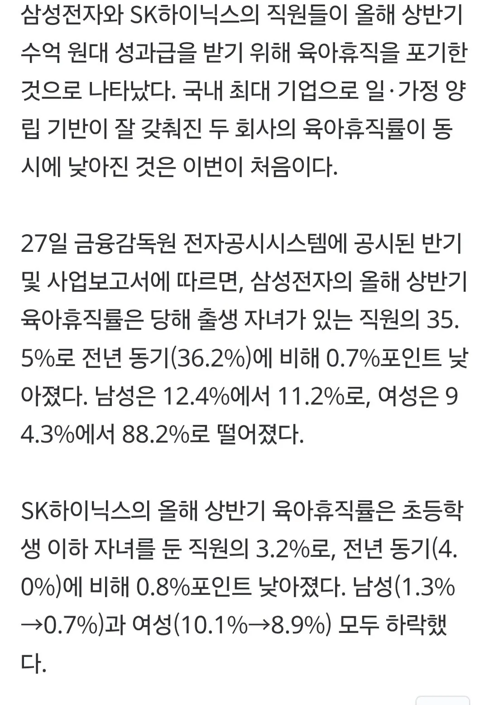

???: 아빠가 우리 개붕이 평생 학비 벌어올게!!

???: 아빠가 우리 개붕이 평생 학비 벌어올게!!
삼하 정도나 저렇지 모든 중견대겹들이 저러진 않아..
저 돈이면 차라리 도우미 쓰고 일 빡세게하는게 나을듯
세전 기준으로 하루 일하면 도우미 한달 쓸듯
???: 대기업 봐라. 육아휴직도 안쓰고 회사를 위해서 일하려고 하는데 우리도 대기업을 따라가려면 육아휴직 이딴건 쓰면 안되겠지?
로또 당첨급인데 이건 못참긴하지
수치 보면 급감은 아닌 듯
육아휴직 기본 1년은 쓰게했으면 좋겠음
이유는 모르겠지만 6개월씩 잘라쓰던데
그러면 계약직도 안뽑혀서 일만 따블되고 좆같음
6개월이 부부 같이 썼을때 가장 효율좋게 뽑아먹을 수 있는 기간이기때문
그리고 신생아시기 지나면 그래도 시터나 부모님한테 맡길 수가 있어서...... 나중에 초등학교 들어갈때 쓰려고 남겨놓는 사람들도 많아
그니까 그게 제도의 헛점이야
육아휴직 6개월 쓰는게 효율 가장 좋은건 인정인데 회사가 대체인력 수급하고 싶어도 6개월따리라 계약직 구하기가 용이하지 않다고
6개월짜리 단기직장을 누가 하려고 할거같음? 직종에 따라 다르지만 어느정도 숙련을 요하는 직군이면 최소 1년은 일해줘야 그나마 효율이 나오는 직종도 있을텐데ㅋㅋ 그 사이에 겹치는 6개월은 인건비 오버찍는거 ㅋㅋ
뭐 사람이야 구한다쳐도 회사가 그런 스트레스 받을바에는 결혼적령기 여성을 채용하지 않는게 정배라는 판단으로 가는거임
그럼 그런 눈치 없는 좋은직장 가라고 무책임하게 말하기엔 우리나라 기업 대다수는 중소임
그리고 육아휴직 6개월씩 끊어서 본인 효율은 극대화하면서 기업에서 9개월 10개월 11개월 계약직 뽑아서 퇴직금+연차수당 최대한 없애보려고 효율화하는거 욕하는 모순된 개씹새끼들이 세상에 한둘이 아님 ㅋㅋ
난 그냥 물어봐서 알려준거여 ㅠㅠ
육휴 급여가 일정한게 아니고 점점 줄어드는 형태라 6개월이 가성비 좋아서 그럴거야
저 친구는 육휴 1년 쓰는게 가성비가 제일 좋게 만들어야 한다는 주장을 하는거야
'이유는 모르겠지만' 이라고 썼길래 아는거 말해준거예요
제가 잘못한 부분 알려주시면 고치겠습니다
ㅋㅋㅋㅋ 진짜 속보인다
속이 어때서
공짜로 달랬냐? 일하겠다는데 뭔 ㅋㅋㅋㅋ
그렇게 육아휴직 외치다가 돈준다니깐 그것도안하고일하겠다는게 ㅋㅋㅋ
좋은 회사 안다녀본게 너무 티나서 대화 못하겠다
아 그 꼬라지니까 못다니는구나 ㅇㅇ
저게 잘못된거임??
당연한거지;;
악용하는 일부 사례들보고 육아휴직 많이 고깝게 봤나보네 넌 안그러겠지?
남자가 그럴수있나ㅋㅋㅋ
삼성 하닉은 원래 남자도 많이 쓴다 개붕아....
그많이쓰던걸 왜안쓰지 ..
몰라서 묻나. 그러기엔 너무 큰돈이니까.
ㅋㅋㅋㅋㅋ완전체네
당연히 돈때문이지
너는 회사를 돈이 아니라 열정으로 다니냐? 또라이새끼 아냐


숫자보니까근데
급락?이라고 말할정도는 아니던데
그러니까 하이닉스급으로 갈 능력없으면 결혼 못 함
많이 안떨어져보이는건 성과급 영향 안받을만큼 짧게써서그럼
좆소는 육아휴직쓴다고하면 눈치 졸라주고
대기업은 직원들이 육아휴직 안하려고 기를쓰고
멀리서보면 희극이고 가까이서보면 비극이네
ㅠ